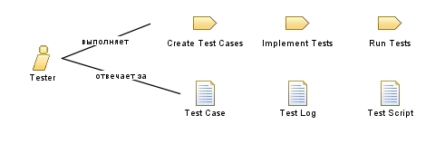

| Роль: Tester |
 |
|
Взаимосвязи
 |
||
| В первую очередь выполняет | ||
|---|---|---|
| Дополнительно выполняет | ||
| Изменяет |
|
|
Основное описание
The person in this role is primarily responsible for the following tasks:
|
Персонал
| Квалификация | A person filling the this role should have these skills:
Where automated testing is required, consider requiring these additional qualifications:
Note: |
|---|---|
| Подходы к назначению | This role can be assigned in the following ways:
|
This program and the accompanying materials are made available under the |